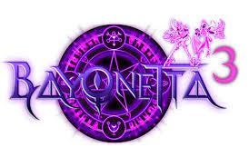
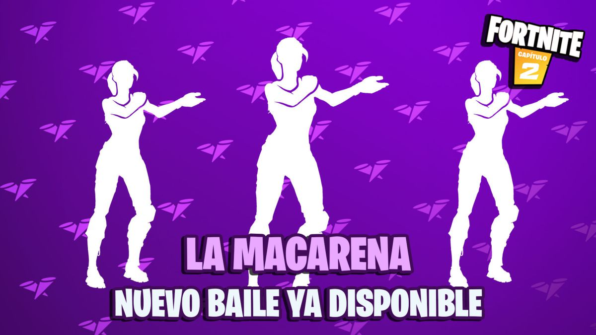

Bayonetta 3 sigue en marcha y "progresa bien", según Nintendo
Los de Kyoto insisten en que el desarrollo de la mano de Platinum Games transcurre correctamente, mientras Hideki Kamiya muestra su enfado con algunos fans.
Uno de los grandes ausentes del pasado E3 2021 fue sin duda Bayonetta 3, uno de los juegos más esperados del catálogo futuro de Nintendo Switch. A pesar de que Hideki Kamiya ya avisó hace meses que nos olvidáramos de él, no eran pocos los fans que esperaban una aparición en esta reciente feria, algo que como vimos, no se produjo. Sin embargo, y a pesar de las sospechas, desde Nintendo aseguran que el juego no solo está lejos de cancelarse, sino que su desarrollo progresa adecuadamente. Fue en el contexto del Nintendo Treehouse donde desde el medio Gamespot pudieron hablar con Nate Bihldorff y Bill Trinen, representantes de Nintendo America, pudieron preguntar acerca de Bayonetta 3. Bihldorff confirmó que, en efecto, "el juego aún existe", mientras que Trinen añadió que su desarrollo "progresa bien". "Nos gusta enseñar cosas cuando estamos preparados para mostrarlas, y también cuando los desarrolladores están preparados para mostrarlas", añade Trinen, concluyendo sus declaraciones pidiendo a los fans que estén atentos a futuras noticias.
La Macarena llega a Fortnite; así es el nuevo baile
Fortnite Battle Royale recibe uno de los bailes más populares de todos los tiempos: La Macarena, de Los del Río. Os mostramos cómo es y cuánto cuesta.
Tetris Effect: Connected llegará a PS5, PS4, Steam y EGS en julio con cross play y realidad virtual
El aclamado juego de Mizuguchi dejará de ser exclusivo de Xbox y sumará nuevos modos y juego cruzado a una experiencia ya de por sí insuperable.
A finales del año pasado, Tetris Effect: Connected llegó como una versión expandida del aclamado Tetris Effect, lanzado allá por 2018, pero al contrario que aquel, exclusivo de PC y PS4, esta nueva edición aterrizó siendo exclusiva de Xbox y estuvo disponible en Game Pass desde el día de salida de Xbox Series X/S. Ahora la exclusividad llega a su fin y Resonair, la desarrolladora de Tetsuya Mizuguchi, su creador, ha anunciado que a partir de julio, en una fecha aún por determinar, podremos disfrutar de Tetris Effect: Connect en cualquier plataforma. Y más concretamente en PS4, PS5 (vía retrocompatibilidad, no nativa), Steam y Epic Games Store. Es más, los poseedores del original podrán actualizar a éste de forma gratuita.